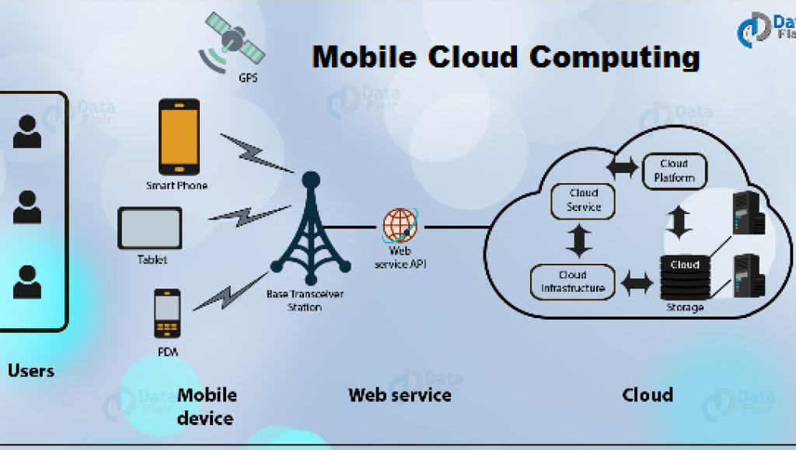

In general, contemporary mobile computing involves a mobile computing workstation of some form, commonly referred to as a mobile device, and a wireless network connection based on Wi-Fi (wireless LAN) or cellular (wireless WAN) technology. Local data storage on the mobile device is typically provisioned, as well, with access to local data in some cases substituting for the network connection.
Nomadic computing may utilize a wired network connection and AC electrical power, neither of which is appropriate for fully mobile operations. Access to network resources is essential to contemporary mobile computing, given the shared and collaborative nature of computing overall today and the prevalence of cloud-based resources, and it is rare to find a mobile device without integral battery power.
Mobile devices include notebook PCs, which are functionally equivalent to desktop PCs; tablets; mobile phones, or smartphones; and a variety of products aimed at vertical and specialized applications, such as those used in medical applications, surveillance and security, and telemetry and control. In general, users select the device that is most appropriate to the applications they require, with notebooks better suited to content creation and tablets often preferred for content consumption. Smartphones represent a compromise in terms of screen size and other user interface elements, such as small, screen-based keyboards, but also function as pocket-size computers and communicators. (Reference: searchmobilecomputing)
